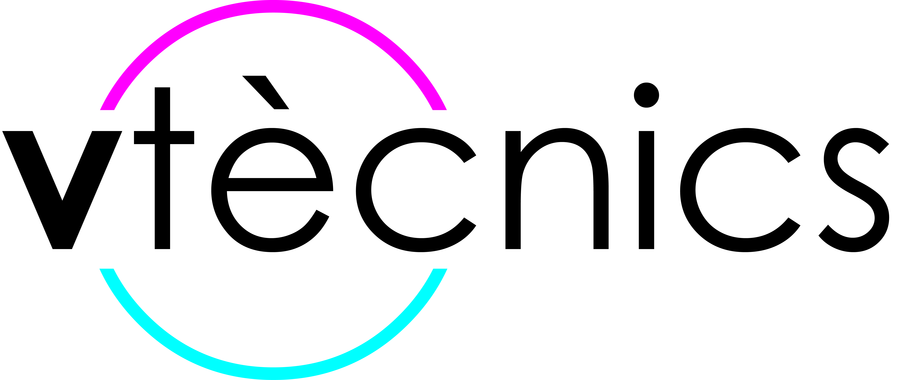

PSC - Plan de Seguridad y Coordinación
- Documento base de seguridad para montaje, desmontaje, trabajos en altura, maquinaria, EPI, señalización y emergencias de obra.

PSC Elrow Town 2026 · Iren Green Park, Reggio Emilia
Consulta rápida de la información esencial del PSC, el DUVRI y el Plan de Gestión de Emergencias: emergencias, interferencias entre empresas, trabajos en altura, rigging, audio, video, electricidad, maquinaria, señalización, EPI y coordinación.
Prioridad maxima
Acciones operativas resumidas desde los apartados 9.1 a 9.6 del PSC.
Contexto de obra
Documentación original
Acceso directo a los documentos fuente para consultar el texto completo.
Riesgos presentes
Tarjetas resumidas para identificar exposiciones, medidas y EPI antes de empezar una tarea.
DUVRI
Medidas añadidas a partir del Documento Único de Valoración de Riesgos Interferenciales.
Fases del montaje
Herramientas y maquinaria
Protección individual y colectiva
Planificacion
Antes de trabajar
Las marcas se guardan en este dispositivo para uso diario del trabajador.
Numeros utiles